Chapter5：内存层次架构
感谢yelan的指导教学，没有他我感觉期末完了。
5.1 Introduction
概念：
-
时间局部性（Temporal Locality，时间局部性）
定义： 时间局部性是指如果一个数据项被访问，那么它很可能会在短时间内再次被访问。也就是说，程序访问的某个内存位置一旦被访问，下一次访问该位置的概率较高。 举例： 在循环中，同一个变量通常会在短时间内多次被使用。例如，在一个 for 循环中，计数器会在每次迭代时增加，计数器所在的内存位置会被频繁访问。
-
空间局部性（Spatial Locality，空间局部性）
定义： 空间局部性是指如果一个数据项被访问，那么其相邻的内存位置也很可能会在不久的将来被访问。换句话说，程序访问某个内存位置后，附近的内存位置也很有可能被访问。
举例： 如果程序访问了数组中的第 i 个元素，那么很可能在接下来的操作中访问 i+1、i+2 等相邻的数组元素。这些元素在内存中往往是连续存储的，内存位置也较为接近。
关注两个层次（上层和下层），这里的上下层指的是 多级内存层次结构，例如：寄存器、缓存、主存等。
- 上层（例如缓存）： 存取速度快，但容量小。
- 下层（例如主存）： 存取速度较慢，但容量大。
为了提高性能，数据在不同的内存层级之间以 块（block） 为单位进行传输。块 是内存之间传输的最小数据单位。
命中（Hit）和未命中（Miss） + 命中（Hit）： 如果数据已经存在于上层（如缓存）中，数据访问即为命中。 这一定义我和yelan认为有点歧义，其实命中指的都是地址，跟数据倒没太有关系。 + 未命中（Miss）： 如果数据不在上层中，必须从下层（如主存）中获取数据，访问则为未命中，通常会导致较长的延迟。
命中时间（Hit Time） + 定义： 访问上层内存的时间，包括判断访问是否为命中的时间。也就是说，命中时间不仅包含从上层内存读取数据的时间，还包括判断数据是否在上层内存中的时间。
未命中惩罚（Miss Penalty） + 定义： 当发生未命中时，需要将上层内存中的一个数据块替换为来自下层内存的对应数据块，并将该数据块传递给处理器所需的时间。未命中惩罚包括以下两个部分：
1. 从下层内存（如主存或磁盘）读取数据并将其加载到上层内存中的时间。
2. 将该数据块传递给 CPU 以供使用的时间。
利用局部性 内存层次结构（Memory Hierarchy） + 将所有数据存储在磁盘上 所有数据初始存储在磁盘中，这是最慢但容量最大的存储介质。
-
将最近访问过的数据（以及相邻的数据）从磁盘复制到较小的 DRAM 内存 数据从磁盘读取后，首先存储在较快但容量较小的 动态随机存取存储器（DRAM） 中。因为程序经常会访问最近用过的数据，所以把这些数据移到 DRAM 中可以加速访问。
-
将更近期访问过的数据（以及相邻的数据）从 DRAM 复制到更小的 SRAM 内存 进一步，静态随机存取存储器（SRAM） 存储在 CPU 附近，并用于存储更近期访问的、非常频繁的数据。SRAM 比 DRAM 更快，但容量更小，主要用于缓存（cache）中存储热数据。
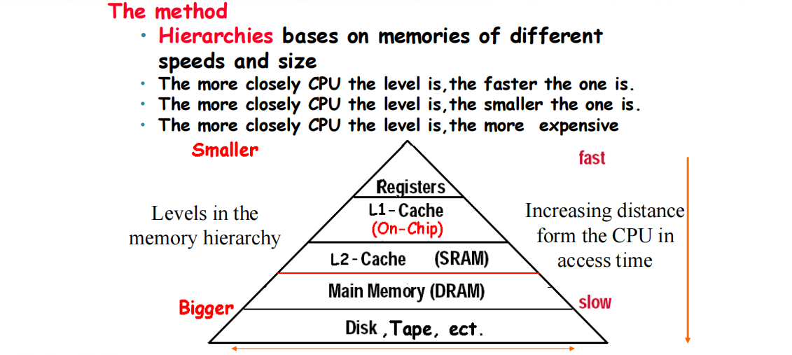
越靠近CPU的内存，速度越快，但容量越小，也越昂贵。
- 缓存的基本原理：SRAM 和 DRAM（主存）
要优化的是
速度缓存系统主要依赖于两种内存类型：SRAM（静态随机存取存储器）和 DRAM（动态随机存取存储器）。 SRAM 速度快，但容量小，通常用于 CPU 缓存中（如 L1、L2、L3 缓存）。 DRAM 速度较慢，但容量大，主要作为主存（RAM）使用。 缓存的目的是通过利用局部性原理（时间局部性和空间局部性）来加速数据访问，即把经常访问的数据存储在更快的 SRAM 中，而其他数据则存放在容量更大的 DRAM 中。 - 虚拟内存：DRAM 和磁盘
要优化的是
容量虚拟内存技术使得计算机可以将 DRAM 和 磁盘 结合起来使用，提供几乎无穷的内存空间。 DRAM 作为主存，提供快速的访问速度，但其容量有限。 磁盘（例如硬盘或固态硬盘）提供巨大的存储空间，但其访问速度较慢。 通过虚拟内存，操作系统可以将磁盘的一部分当作扩展内存来使用，当 DRAM 空间不足时，数据可以被暂时存储到磁盘中（交换区或页面文件），并根据需要交换到 DRAM 中。这样，计算机可以有效扩展内存容量，尽管访问速度较慢。
5.2 Memory Tecnology
5.2.1 SRAM
-
存储原理： 值是通过一对反相门（inverting gates）来存储的。具体来说，SRAM 使用的是由反相器（inverters）组成的锁存电路，每个存储单元都由一个反相器对（两个反相器）形成一个存储单元，能够持续保存数据，只要电源不切断。
-
优点： 非常快： 由于 SRAM 不需要周期性地刷新（如 DRAM），其存取速度非常快，适用于高速缓存（Cache）等对速度要求较高的场合。
- 缺点： 占用空间大： 每个 SRAM 单元需要 4 到 6 个晶体管，比 DRAM 单元所需的晶体管要多得多。因此，相同面积的芯片上，SRAM 的存储容量比 DRAM 小。
5.2.2 DRAM
-
数据存储方式： 数据以
电荷的形式存储在一个电容器中。电容器能够存储电荷代表“1”或“0”的数据，但电荷会随着时间的推移逐渐泄漏，因此需要定期刷新。 -
访问方式： 使用 单个晶体管 来访问存储的电荷，晶体管充当开关，允许对电容器中的电荷进行读写操作。
-
需要定期刷新： 由于电容器中的电荷会随着时间泄漏，DRAM 必须定期
刷新才能保持数据的有效性。刷新过程通常是：- 读取内容：先读取存储单元中的电荷（数据）。
- 写回电荷：然后将读取的数据（电荷）重新写回，以保持数据不丢失。 刷新操作通常是针对 DRAM 行 进行的，即一次刷新操作会影响一个数据行中的所有存储单元。
DRAM 中的比特组织：
-
DRAM 中的比特（数据）被组织为一个矩形数组，即将内存划分为行和列。每个内存单元存储一个比特的数据，行和列的交叉点就是存储数据的位置。
-
DRAM 访问整个行： 当访问 DRAM 时，通常会一次性访问整个 行（即一行数据）。由于 DRAM 是以行和列的方式组织的，访问一整行数据比逐个单元读取数据要更高效。
-
突发模式（Burst Mode）： 在突发模式下，DRAM 会从一行中连续提供多个字（数据），并减少访问延迟。这种方式通过连续快速地从同一行中读取数据来提高数据访问效率。
-
-
双倍数据速率（DDR）DRAM：
DDR DRAM是一种可以在时钟的上升沿和下降沿都进行数据传输的内存类型。这样，DDR DRAM每个时钟周期能传输两倍的数据量，提高了数据传输速率。 -
四倍数据速率（QDR）DRAM：
QDR DRAM使用了更为先进的技术，它分别在 输入 和 输出 上使用不同的 DDR 信号通道。即QDR DRAM在时钟的上升沿和下降沿同时进行输入和输出传输，因此每个时钟周期可以进行四次数据传输，从而提供更高的带宽。
DRAM 性能因素
- 行缓冲区（Row Buffer） 定义： 行缓冲区是一种用于存储 DRAM 中一整行数据的缓存机制。 作用： 行缓冲区允许多个数据字（words）在一次操作中并行读取和刷新。当 CPU 需要访问 DRAM 时，数据首先会被加载到行缓冲区中，之后可以在不访问 DRAM 本身的情况下快速读取多个数据字。这样，行缓冲区可以减少内存访问的延迟，并且使得并行读写操作变得更高效。
-
同步 DRAM（Synchronous DRAM，SDRAM）
定义： 同步 DRAM 是一种能够与系统时钟同步的 DRAM 类型。它与外部时钟信号保持同步，从而使得数据的读取和写入过程更加高效。 作用： SDRAM 允许进行连续的访问操作（通常是突发模式，Burst Mode），无需每次都发送一个新的地址。也就是说，当需要连续访问多个数据时，SDRAM 可以一次性处理多个地址请求，减少了地址发送的频率，从而提高了数据传输效率。 提高带宽： 因为不需要每次都发送地址，减少了时钟周期的开销，从而提高了内存带宽，增强了性能。 + DRAM 分组（DRAM Banking）
定义： DRAM 分组是将 DRAM 存储芯片划分为多个
bank，每个bank可以独立地执行读写操作。 作用： 通过将多个 DRAM 芯片分成多个bank，可以实现同时对多个bank的并行访问，从而提高带宽。在 DRAM 分组系统中，当一个bank正在执行某个操作时，其他银行可以同时进行其他操作，减少了访问冲突，提高了数据吞吐量。 提高带宽： 由于可以并行访问多个bank，DRAM 分组显著提高了系统的内存带宽，尤其是在处理大量数据时。
5.2.3 Flash Memory 闪存
-
NOR 闪存：位单元像一个 NOR 门
- 支持随机读写访问
- 用于嵌入式系统中的指令存储
-
NAND 闪存：位单元像一个 NAND 门
-
更高的存储密度（每单位面积更多位），但仅支持块级访问
- 每 GB 成本更低
- 用于 USB 闪存盘、媒体存储等
-
闪存位会在数千次访问后损耗
-
不适合直接替代 RAM 或硬盘
- 磨损均衡：将数据重新映射到使用较少的块上
5.2.4 Disk Storage
断了电数据还在。之前的那些要么电容器要么电路的断电就老实了()。
每个扇区的记录内容：
- 扇区 ID：每个扇区有唯一的标识符，用于区分不同的扇区。
- 数据：每个扇区存储一定量的数据，传统硬盘的扇区通常为 512 字节，而现代硬盘或存储设备可能提议采用 4096 字节（即 4 KB）作为单个扇区的大小。
- 错误纠正码（ECC）：为了提高存储的可靠性，扇区中会包含用于错误检测和纠正的 ECC。它能帮助隐藏磁盘中的物理缺陷或记录错误，确保数据的完整性。
- 同步字段和间隙：这些是用于保证数据读写同步的控制信息，确保读写过程中的时序正确。
访问扇区时涉及的步骤：
- 排队延迟：如果磁盘控制器正在处理其他的访问请求，则当前请求需要排队等待。这会导致一定的延迟。
- 寻道（Seek）：硬盘中的磁头需要移动到正确的磁道才能访问目标扇区，这个过程称为 寻道。寻道时间是硬盘访问的一个关键延迟因素。
- 旋转延迟（Rotational Latency）：磁盘是旋转的，磁头在完成寻道后可能需要等待目标扇区与磁头对齐。旋转延迟是指磁头等待目标扇区经过的时间。
- 数据传输：当磁头正确定位到目标扇区并且扇区的旋转对齐时，数据传输才会发生。此时，数据从磁盘传输到计算机的内存中。
- 控制器开销：整个访问过程需要磁盘控制器的协调工作，包括处理排队、寻道、旋转延迟等。这些管理工作会产生一定的控制开销。
下面是计算例子：
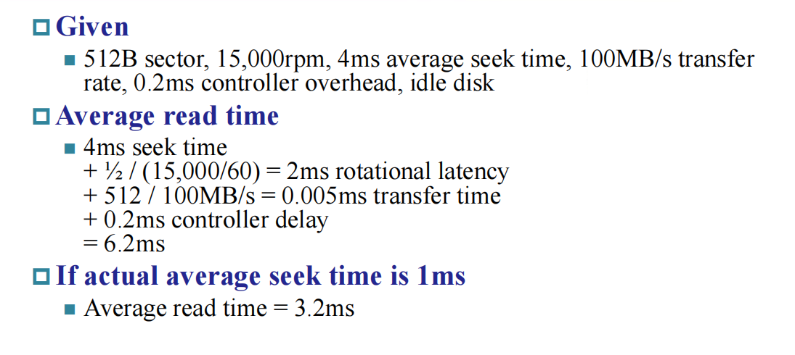
比较难理解的是\(\frac{\frac{1}{2}}{\frac{15000}{60}}\)吧，计算的是旋转延迟，\(\frac{1}{2}\)的原因是需要等磁盘旋转半圈才是对齐的。
磁盘性能问题
- 厂商提供的平均寻道时间
- 基于所有可能的寻道操作
- 局部性和操作系统调度可以导致实际的平均寻道时间更小
- 智能磁盘控制器分配磁盘上的物理扇区
- 向主机提供逻辑扇区接口
- 如 SCSI、ATA、SATA
- 磁盘驱动器包含缓存
- 预取扇区以预测即将访问的数据
- 避免寻道和旋转延迟
5.3 The basics of Cache
访问一个字，就要看是不是在cache里面，没有的话就要从内存中取出放到cache中。有的话你也要思考怎么找，这本质是一个问题。
直接映射：利用低位地址来确定，比如32->8，00001/00101/10001/10101都是放到第一位的位置，这里我们就是看后三位，其实也好理解。找也简单，看有没有就去固定位置看，没有就miss。问题在于区分存的是什么，是00001还是10001之类的。所以我们需要标记，那么标记是什么，显然就是高位。
这是每个block的地址样式：
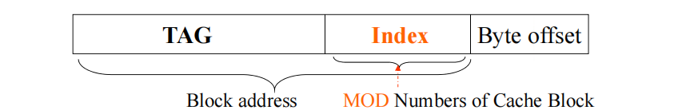
Index的大小与块的数量相关，32->5，16->4，这样类比。
Bytes offset与块的大小相关，
对于32位架构，那比方说缓存空间是1KB，块大小是16B，那么OFFSET就是4位，INDEX就是10-4=6位，剩下的就是标记位了，总共22位。
这个则是block的数据样式：
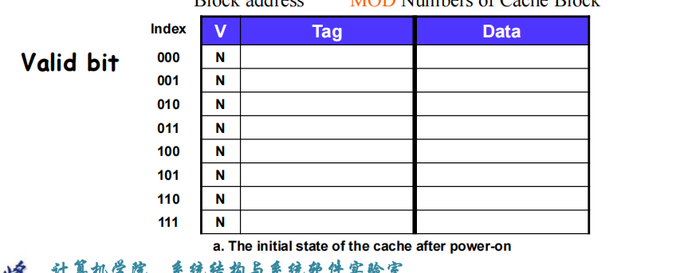
Valid bit为Y就是有数据的，为N就是空的。
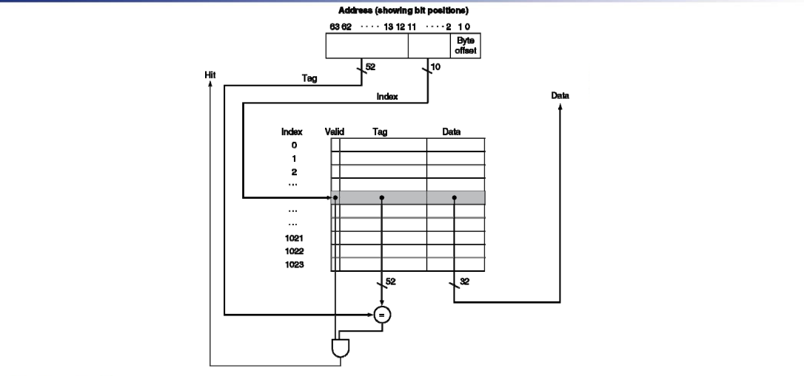
Example:
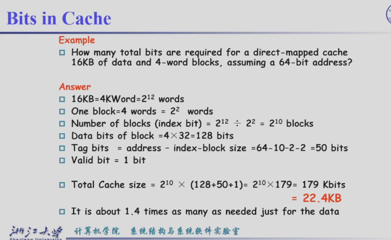
个人感觉很简单，复习到要是不会可以remake。
Example2:
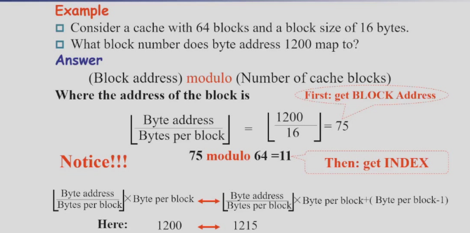
这里是要得到一个块索引。
OK映射结束。
问题在于miss的时候PC已经加4了，但是我们需要停止之，先把PC-4。
数据miss(data cache miss):就不用PC处理了。
写：
我们发现cache与内存都有备份，有两种方法写命中。
- write-back。直接写cache，然后从cache写回内存。好处是快，坏处是只更新cache，有丢失风险。 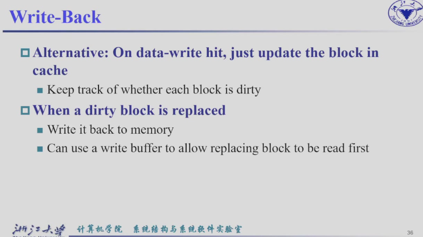
- write-through。同时写，好坏处反过来。
- 由于满，设置缓冲区，好处在于不满的时候可以不让cpu停下来等，可以慢慢写入内存。 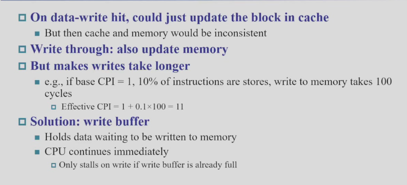
write back： 不能直接写过去，要比对标签，命中才能写，不然就被覆盖而又没有备份，两周期。
write through: 比对标签的同时可以直接写过去，不需要比对，一周期。
也有两种方法写不命中：
-
写分配： 写回一般搭配写分配，写通过则都可以。
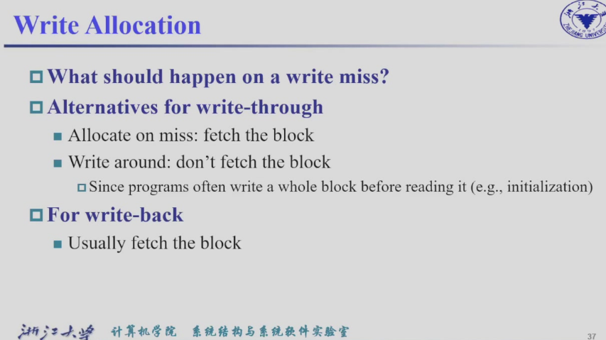
-
写绕过(写不分配)：
一道题带你了解write hit/miss及其处理的概念：
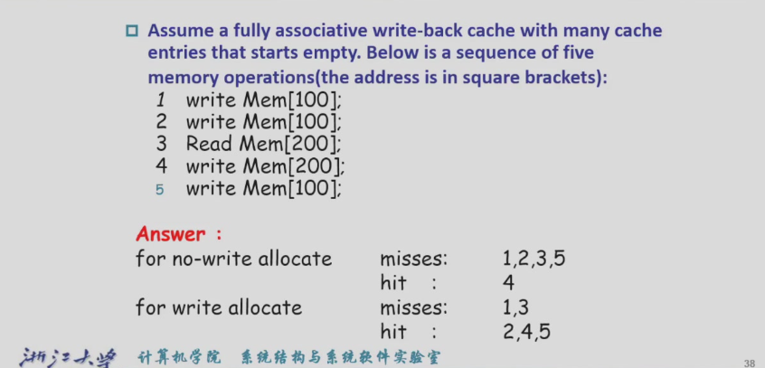
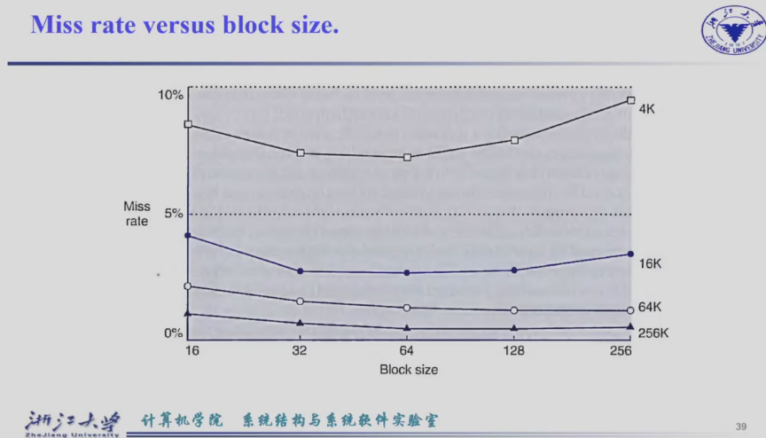
4/16/64/256K对应的是缓存大小。
数据与指令cache是分开的。
写拥有一个one-entry buffer，写不命中的时候，先写buffer，然后写回内存，所以只要不连着来就不会拥堵。
内存的组织方式有三种:
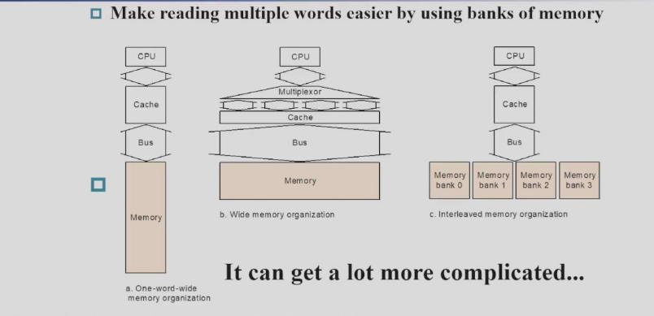
常规
宽总线
交叉存取
5.4 Measuring and improving cache performance
主要内容如下： 1. 测量缓存性能 2. 通过更灵活地放置块来减少缓存丢失 3. 使用多级缓存减少未命中惩罚
$ Average Memory Access time = hit time + miss time = hit rate × Cache time + miss rate × memory time$
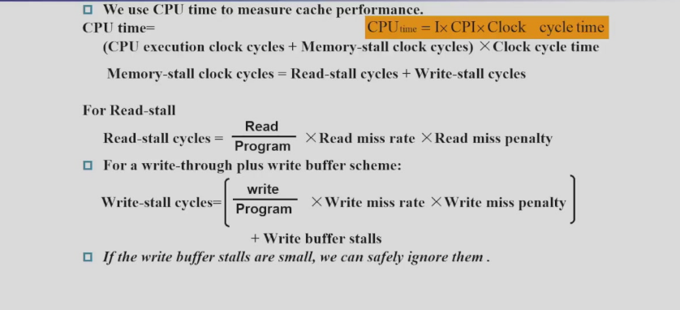
buffer满的时候比较少，所以buffer stall(因为buffer full而产生的stall)比较小，可以忽略。
Example：
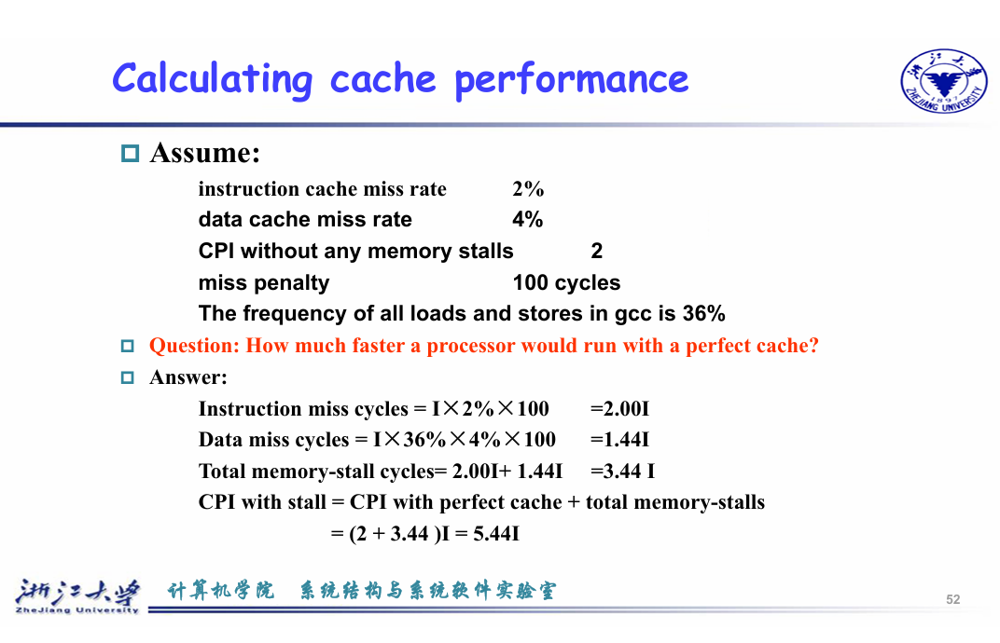
一句话，不要光想着提升CPU的速度，内存也要考虑。
之前讲的都是miss，然而hit也是有时间的，至少需要查找是否hit的时间。
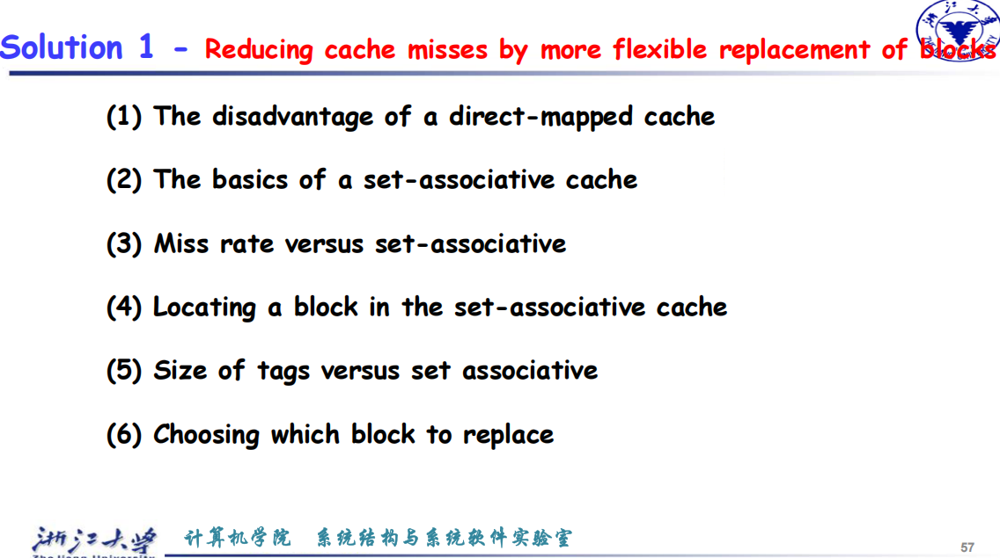
主要就是直接映射多个位置不是映射到同一块，那要是连续的映射这块还每次要改，别的空在那里，效率不高。
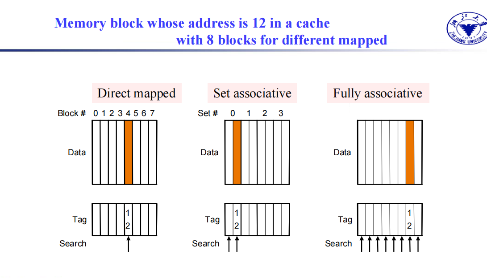
组相连：1/2都可以用来存对应映射的数据。
全相连：整个就是一个组了，然而查找简直龟速。
相连数越高，组数就越少，每次查找也更耗时。
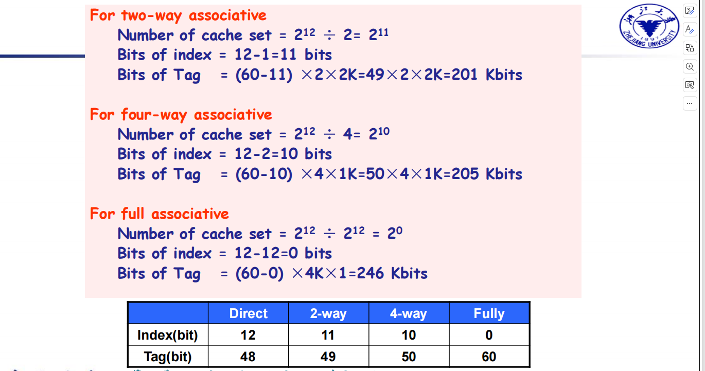
Tag的位数增加。
在这一过程，代替是很重要的：
-
最少使用（Least Recently Used, LRU）:
-
选择最长时间未使用的条目 LRU策略会根据缓存中各条目的使用情况来决定替换哪个条目。具体来说，它会选择最长时间没有被访问的数据进行替换，认为它最不可能再被使用。LRU对于常见的访问模式可以提供较好的性能。
-
对于2路组关联来说，LRU比较简单，4路组关联可管理，但超过4路时就比较困难 对于较低的组关联度（如2路或4路），LRU策略比较容易实现和管理。但随着组关联度的增大，LRU的实现和维护变得更加复杂，尤其是在硬件上实现时会变得较为昂贵。
-
-
随机（Random）:
- 随机策略与LRU在高关联度下性能接近 随机替换策略在选择替换缓存条目时，完全依赖于随机数生成。这种策略可能并不总是最优，但在高组关联度的情况下，随机策略与LRU的性能差异通常很小，因此可以作为一种简单且有效的替换策略。
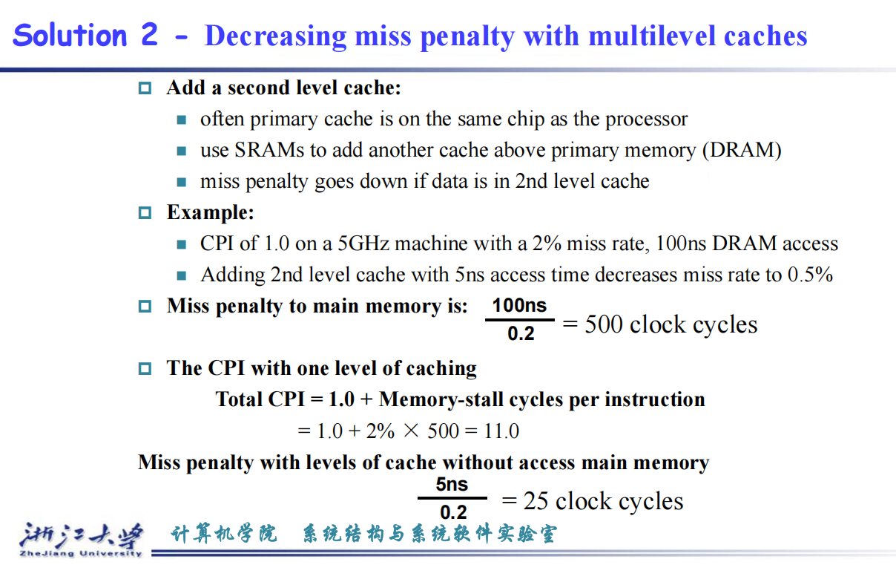
增加多级cache，比方说两级cache，一级cache miss了，再查二级cache(一般要比一级大不少，所以速度比较慢)，二级miss了再查内存，这样就可以减少miss的惩罚。
5.7 Virtual memory 虚拟存储
用主存作为磁盘的缓存，由硬件和操作系统共同管理
所有程序共享主存，但是有自己的虚拟内存，映射由CPU和OS管理。VM中的块被称为页(page)，miss被称为页面故障(page fault)
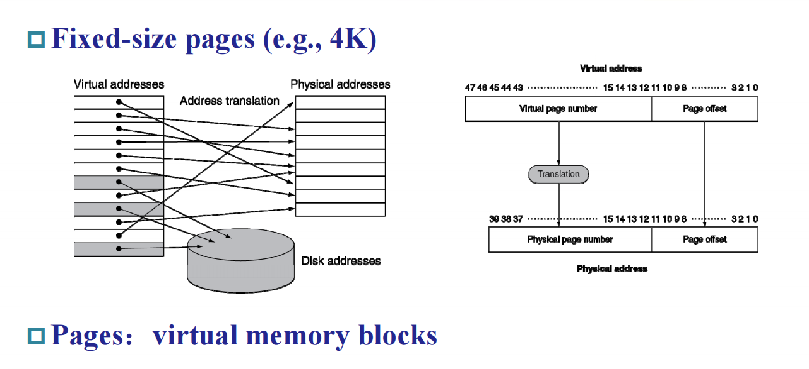
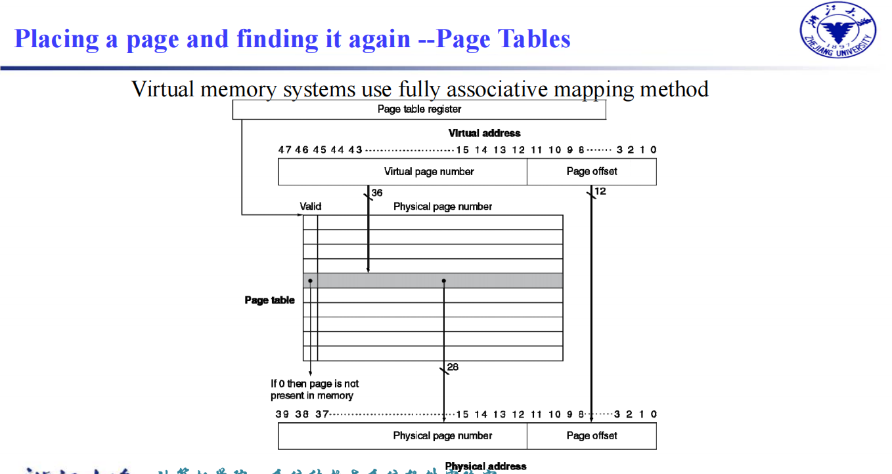
这是VM到PM(物理地址)的映射。
虚拟内存比物理内存大，那么其位数更大。
那么如何对应？
Page offset共有12位。
比方说拿那个Page Tables那张图，虚拟地址是36位，所以有232个Page Table项，每个项则是28位(这个是利用物理地址来计算的)。
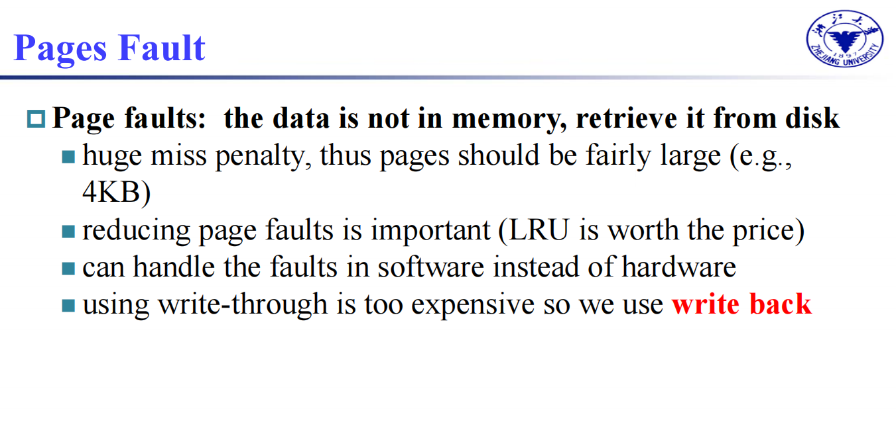
往磁盘上写就太慢了，最好大块大块的写，因此写回才是对的，要是写通过延迟太高。